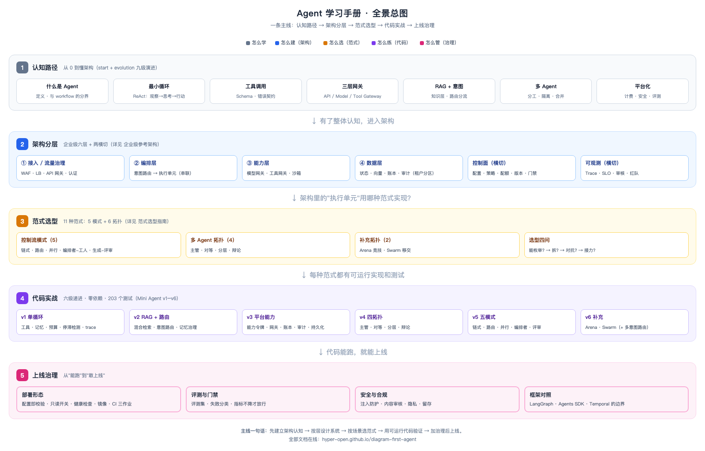

全景总图
一张图看完整个手册

全景总图 · 五段式主线：先建立认知，再按层设计，按场景选范式，用代码验证，最后加治理上线
五段各自解决什么
| 段 | 解决什么问题 | 对应章节 | 产出 |
|---|---|---|---|
| ① 认知路径 | Agent 是什么、怎么长成这样 | 学习路线、架构演进 | 一张架构地图 + 判断力 |
| ② 架构分层 | 系统该怎么分层、每层管什么 | 企业级架构、分层架构 | 六层 + 两横切的参考架构 |
| ③ 范式选型 | 某个业务该用哪种范式 | 范式选型指南、编排层 | 11 种范式 + 选型四问 |
| ④ 代码实战 | 这些范式怎么落地、怎么验证 | Mini Agent v1–v6 | 六级可运行代码 + 203 测试 |
| ⑤ 上线治理 | 能跑之后怎么敢上线 | 部署形态、框架对照 | 部署、CI、评测、安全 |
主线一句话
先建立架构认知 → 按层设计系统 → 按场景选范式 → 用可运行代码验证 → 加治理后上线。
这五段不是并列的知识点，而是有先后依赖的一条链：
- 不知道架构长什么样，选范式就是凭感觉；
- 不选定范式，代码就不知道该实现什么；
- 没有可运行代码，架构只是纸图；
- 没有治理，跑起来的系统不敢给用户用。
怎么用这张图
- 第一次接触：从 ① 开始，按学习路线走。
- 要做技术选型：直接跳到 ③ 范式选型指南。
- 要落地实现：看 ④，从 Mini Agent v1 开始跑。
- 要上线：看 ⑤ 企业级架构 与 部署形态。
- 要做架构评审：把 ② 的六层当成检查表，逐层问"这层谁负责、契约是什么"。
这套内容的边界（诚实说明）
| 已覆盖 | 未深入 |
|---|---|
| 架构分层、演进、范式、可运行实现 | 模型训练/微调原理、GPU 推理优化 |
| 网关、RAG、路由、多 Agent、计费、审计 | 具体业务行业的深度定制 |
| 部署形态、CI、评测门禁 | 大规模分布式（跨区多活）的完整实现 |
| 纯标准库教学实现（零依赖） | 生产级框架的完整用法（只做概念映射） |
代码是教学实现，不是生产级产品：单进程、内存/文件存储、无 TLS。它证明了机制正确，但上生产要按企业级架构的差距清单逐项补齐。